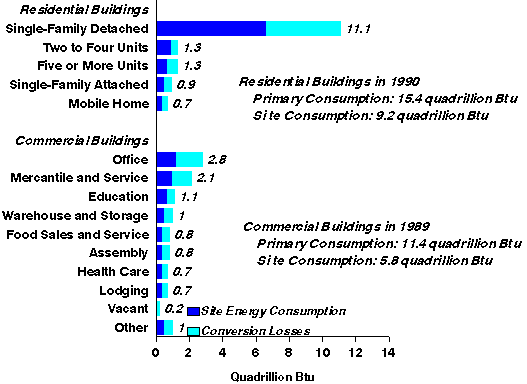

<DESCRIPTION  - recs2j.HTM    Buildings and Energy in the 1980's >

<KEYWORDS                                                                                                                      

<html>

<head>
<title> Buildings and Energy in the 80's -- Detailed Tables</title>
</head>

<body bgcolor="#FFFFFF">


<!--<H1><CENTER>Buildings and Energy in the 1980's</CENTER></H1>-->

<a name="recs2j">
<center></center>


<center><h2>Detailed Tables</h2></center>


<center><h3>Total Residential and Commercial Primary Consumption by Type of
Building</h3>
<a></a></center><p>
<font size=2>&#160;&#160;&#160;&#160;&#160;    Sources: Energy Information
Administration, Office of
Energy Markets and End Use, EIA-457 of the 1980 Residential Energy Consumption Survey
and Form EIA-871 of the 1989 Commercial Buildings Energy Consumption
Survey.</font>
<br><br>

<center></center>


This report introduces several innovations in energy data reporting that complement the
previously published triennial reports of the Residential Energy Consumption Survey (RECS)
and the Commercial Buildings Energy Consumption Survey (CBECS). (1) Both residential and
commercial sector buildings data are presented together in the report. Common units of analysis,
the residential or commercial building and floorspace, are used to facilitate
comparison.<sup>17</sup> (2) Unlike the triennial RECS and CBECS that focus on energy data
for a single year, this report focuses on an entire decade of energy data. (3) A common set of
table types is used to provide consistency across the sectors and across time. (4) Energy
expenditures are reported in both nominal and real terms. (5) End-use consumption and
expenditures are provided for the earlier RECS, data that were not published in the original
Consumption and Expenditures reports. (6) Primary energy consumption is reported for all
energy consumption estimates.<p><br>

<center></center>

<center><h3>Table Format</h3></center>
The Energy Information Administration (EIA) is responsible for publishing national-level
statistics on energy consumption by end users. Currently, the EIA publishes statistics for the
residential, residential transportation (personal vehicles), commercial buildings, and
manufacturing sectors. For the commercial sector, data are collected via a nationwide survey of
commercial buildings, the CBECS. The RECS collects data from the households in the
residential sector. This report summarizes a decade of energy data that were obtained via the
RECS and CBECS, using data from the six RECS and the four CBECS, which were conducted
between 1979 and 1990.<p><br>
The RECS and CBECS data bases for the ten surveys over the 1979 to 1990 time frame contain
an enormous amount of information on buildings and energy. A major consideration in the
preparation of this report was how to limit these data to a manageable size. The detailed tables
were designed to provide, as much as possible, information that is consistent between the two
sectors and across the time period covered. The format of the tables was geared towards
answering four general energy-related questions: (1) How many buildings used each possible
energy source/end-use combination? (2) How much floorspace was in buildings which used each
possible energy source/end use combination? (3) How much energy was consumed? and (4)
How much money was spent on energy?<p><br>
For a given table, the row-stub categories address information on several major building
characteristics that are common to both surveys: location, type of building, size, and year of
construction. There are eight types of tables: three types provide data on the number of buildings
and the total floorspace by energy source and end use; two types provide data on energy
consumption by energy source and end use; two types provide similar data for energy
expenditures; and one type provides total and average consumption and expenditures by energy
source. A given table or set of tables can provide information on energy use between the
residential and commercial sectors or on energy use within a sector over the decade either among
energy sources or end uses.<p><br>

<font size=2><sup>17</sup>For further information concerning the development of the
common units of
analysis, see Appendix C, "Data Quality."</font><br>


<center></center>

To View and/or Print Reports (requires Adobe Acrobat Reader) - 
<a href="http://www.adobe.com/acrobat/readstep.html"><i>  Download Adobe Acrobat
Reader</i></a><br>

If you experience any difficulties, visit our <a
href="http://www.eia.gov/tfaq.html">Technical Frequently Asked Questions.</a>

<center></center>

<left>You have several options for downloading the CBECS or RECS tables:
<ul>
<li>entire set
<li>by survey year
<li> or selected tables by year and category
</ul>

<center></center>


<left>All CBECS Tables - <a href="ftp://ftp.eia.doe.gov/pub/consumption/commercial/cbsjoint.pdf">Buildings and Energy in the

1980's</a> (file size 713,771 bytes) pages: 92 <br>

&#160;&#160;or CBECS tables by year:


<ul>

<li><left>CBECS Tables - 1979 - <a href="ftp://ftp.eia.doe.gov/pub/consumption/commercial/cb79join.pdf">Buildings and Energy in the

1980's</a> (file size 160,773 bytes) pages: 21

<li><left>CBECS Tables - 1983 - <a href="ftp://ftp.eia.doe.gov/pub/consumption/commercial/cb83join.pdf">Buildings and Energy in the

1980's</a> (file size 162,826 bytes) pages: 21 

<li><left>CBECS Tables - 1986 - <a href="ftp://ftp.eia.doe.gov/pub/consumption/commercial/cb86join.pdf">Buildings and Energy in the

1980's</a> (file size 172,142 bytes) pages: 21

<li><left>CBECS Tables - 1989 - <a href="ftp://ftp.eia.doe.gov/pub/consumption/commercial/cb89join.pdf">Buildings and Energy in the

1980's</a> (file size 227,676 bytes) pages: 29


</ul>


<left>All RECS Tables - <a href="ftp://ftp.eia.doe.gov/pub/consumption/commercial/rxjoin.pdf">Buildings and Energy in the 1980's</a>

(file size 2 MB) pages: 255 <br>

&#160;&#160;or RECS tables by year:

<ul>

<li><left>RECS Tables - 1980 - <a href="ftp://ftp.eia.doe.gov/pub/consumption/commercial/rx80join.pdf">Buildings and Energy in the

1980's</a> (file size 336,153 bytes) pages: 41 

<li><left>RECS Tables - 1981 - <a href="ftp://ftp.eia.doe.gov/pub/consumption/commercial/rx81join.pdf">Buildings and Energy in the

1980's</a> (file size  337,174 bytes) pages: 41 

<li><left>RECS Tables - 1982 - <a href="ftp://ftp.eia.doe.gov/pub/consumption/commercial/rx82join.pdf">Buildings and Energy in the

1980's</a> (file size  339,734 bytes) pages: 39 

<li><left>RECS Tables - 1984 - <a href="ftp://ftp.eia.doe.gov/pub/consumption/commercial/rx84join.pdf">Buildings and Energy in the

1980's</a> (file size  360,891 bytes) pages: 42 

<li><left>RECS Tables - 1987 - <a href="ftp://ftp.eia.doe.gov/pub/consumption/commercial/rx87join.pdf">Buildings and Energy in the

1980's</a> (file size  343,314 bytes) pages: 42 

<li><left>RECS Tables - 1990 - <a href="ftp://ftp.eia.doe.gov/pub/consumption/commercial/rx90join.pdf">Buildings and Energy in the

1980's</a> (file size  357,809 bytes) pages: 44 

</ul>
<center></center>

<left><a name="titles"><a href="http://www.eia.gov/consumption/residential/data/archive/cbecs/cbecs4a.html">Table Titles</a><p>
To view tables, click on the X in the appropriate cell.  (requires Adobe Acrobat

Reader)<br>

<left>File sizes range from 9,529 bytes to 109,138 bytes ( 1 - 12 pages)<p>

<center>


<table border>


<caption><b>Tables by Survey/Year and Category</b></caption>


<tr><td> <b>Survey and Year</b><td ><b>Building Characteristics, Energy Sources, and

End Uses By Number of Buildings and Total Floorspace</b></td><td><b>Total and

Average Primary and Site Energy Consumption and Energy

Expenditures</b></td><td><b>Primary and Site Energy Consumption by Energy

Source</b></td> <td><b>Primary and Site Energy Consumption by End Use</b></td> 

<td><b>Energy Expenditures by Energy Source and End Use</b></td> </tr>

<tr><td colspan=6> </td></tr>

<tr><td colspan=1><b>RECS</b></td><td colspan=5 </TD> </tr>


<tr><td colspan=6> </td></tr>

<tr><td colspan=1>1980 </td> <td colspan=1> <center><a

href="ftp://ftp.eia.doe.gov/pub/consumption/commercial/rgrp180.pdf">X</center></A> </td>  <td colspan=1> <center><a

href="ftp://ftp.eia.doe.gov/pub/consumption/commercial/rgrp2_80.pdf">X</center></A> </td><td colspan=1> <center><a

href="ftp://ftp.eia.doe.gov/pub/consumption/commercial/rgrp3_80.pdf">X</center></A> </td><td colspan=1> <center><a

href="ftp://ftp.eia.doe.gov/pub/consumption/commercial/rgrp4_80.pdf">X</center></A> </td><td colspan=1> <center><a

href="ftp://ftp.eia.doe.gov/pub/consumption/commercial/rgrp5-80.pdf">X</center></A> </td>        </tr>


<tr><td colspan=6> </td></tr>

<tr><td colspan=1>1981 </td> <td colspan=1> <center><a

href="ftp://ftp.eia.doe.gov/pub/consumption/commercial/rgrp181.pdf">X</center></A> </td>  <td colspan=1> <center><a

href="ftp://ftp.eia.doe.gov/pub/consumption/commercial/rgrp2_81.pdf">X</center></A> </td><td colspan=1> <center><a

href="ftp://ftp.eia.doe.gov/pub/consumption/commercial/rgrp3_81.pdf">X</center></A> </td><td colspan=1> <center><a

href="ftp://ftp.eia.doe.gov/pub/consumption/commercial/rgrp4_81.pdf">X</center></A> </td><td colspan=1> <center><a

href="ftp://ftp.eia.doe.gov/pub/consumption/commercial/rgrp5_81.pdf">X</center></A> </td>       </tr>


<tr><td colspan=6> </td></tr>

<tr><td colspan=1>1982 </td> <td colspan=1><center><a

href="ftp://ftp.eia.doe.gov/pub/consumption/commercial/rgrp182.pdf"> X</center></A> </td>  <td colspan=1><center><a

href="ftp://ftp.eia.doe.gov/pub/consumption/commercial/rgrp2_82.pdf"> X</center></A> </td><td colspan=1><center><a

href="ftp://ftp.eia.doe.gov/pub/consumption/commercial/rgrp3_82.pdf"> X</center></A> </td><td colspan=1><center><a

href="ftp://ftp.eia.doe.gov/pub/consumption/commercial/rgrp4_82.pdf"> X</center></A> </td><td colspan=1><center> <a

href="ftp://ftp.eia.doe.gov/pub/consumption/commercial/rgrp5_82.pdf">X</center></A> </td>        </tr>


<tr><td colspan=6> </td></tr>

<tr><td colspan=1>1984 </td> <td colspan=1><center><a

href="ftp://ftp.eia.doe.gov/pub/consumption/commercial/rgrp184.pdf"> X</center> </td>  <td colspan=1><center> <a

href="ftp://ftp.eia.doe.gov/pub/consumption/commercial/rgrp2_84.pdf">X</center> </td><td colspan=1><center><a

href="ftp://ftp.eia.doe.gov/pub/consumption/commercial/rgrp3_84.pdf"> X</center> </td><td colspan=1><center><a

href="ftp://ftp.eia.doe.gov/pub/consumption/commercial/rgrp4_84.pdf"> X</center> </td><td colspan=1><center><a

href="ftp://ftp.eia.doe.gov/pub/consumption/commercial/rgrp5_84.pdf"> X</center> </td>        </tr>


<tr><td colspan=6> </td></tr>

<tr><td colspan=1>1987 </td> <td colspan=1><center> <a

href="ftp://ftp.eia.doe.gov/pub/consumption/commercial/rgrp187.pdf">X</center> </td>  <td colspan=1><center> <a

href="ftp://ftp.eia.doe.gov/pub/consumption/commercial/rgrp2_87.pdf">X</center> </td><td colspan=1><center><a

href="ftp://ftp.eia.doe.gov/pub/consumption/commercial/rgrp3_87.pdf"> X</center> </td><td colspan=1><center><a

href="ftp://ftp.eia.doe.gov/pub/consumption/commercial/rgrp4_87.pdf"> X</center> </td><td colspan=1><center><a

href="ftp://ftp.eia.doe.gov/pub/consumption/commercial/rgrp5_87.pdf"> X</center> </td>        </tr>


<tr><td colspan=6> </td></tr>

<tr><td colspan=1>1990 </td> <td colspan=1><center><a

href="ftp://ftp.eia.doe.gov/pub/consumption/commercial/rgrp190.pdf"> X</center> </td>  <td colspan=1><center> <a

href="ftp://ftp.eia.doe.gov/pub/consumption/commercial/rgrp2_90.pdf">X</center> </td><td colspan=1><center><a

href="ftp://ftp.eia.doe.gov/pub/consumption/commercial/rgrp3_90.pdf"> X</center> </td><td colspan=1><center><a

href="ftp://ftp.eia.doe.gov/pub/consumption/commercial/rgrp4_90.pdf"> X</center> </td><td colspan=1><center><a

href="ftp://ftp.eia.doe.gov/pub/consumption/commercial/rgrp5_90.pdf"> X</center> </td>        </tr>


<tr><td colspan=6> </td></tr>

<tr><td colspan=1><b>CBECS</b></td><td colspan=5 </TD> </tr>

<tr><td colspan=6> </td></tr>

<tr><td colspan=1>1979 </td> <td colspan=1><center><a

href="ftp://ftp.eia.doe.gov/pub/consumption/commercial/grp1_79.pdf"> X</center> </td>  <td colspan=1><center> <a

href="ftp://ftp.eia.doe.gov/pub/consumption/commercial/grp2_79.pdf">X</center> </td><td colspan=1><center><a

href="ftp://ftp.eia.doe.gov/pub/consumption/commercial/grp3_79.pdf"> X</center> </td><td colspan=1><center>

 Not Available</center> </td><td colspan=1><center><a

href="ftp://ftp.eia.doe.gov/pub/consumption/commercial/grp5_79.pdf"> X</center> </td>        </tr>


<tr><td colspan=6> </td></tr>

<tr><td colspan=1>1983 </td> <td colspan=1><center><a

href="ftp://ftp.eia.doe.gov/pub/consumption/commercial/grp1_83.pdf"> X</center> </td>  <td colspan=1><center> <a

href="ftp://ftp.eia.doe.gov/pub/consumption/commercial/grp2_83.pdf">X</center> </td><td colspan=1><center><a

href="ftp://ftp.eia.doe.gov/pub/consumption/commercial/grp3_83.pdf"> X</center> </td><td colspan=1><center>

Not Available</center> </td><td colspan=1><center><a

href="ftp://ftp.eia.doe.gov/pub/consumption/commercial/grp5_83.pdf"> X</center> </td>        </tr>


<tr><td colspan=6> </td></tr>

<tr><td colspan=1>1986 </td> <td colspan=1><center><a

href="ftp://ftp.eia.doe.gov/pub/consumption/commercial/grp1_86.pdf"> X</center> </td>  <td colspan=1><center> <a

href="ftp://ftp.eia.doe.gov/pub/consumption/commercial/grp2_86.pdf">X</center> </td><td colspan=1><center><a

href="ftp://ftp.eia.doe.gov/pub/consumption/commercial/grp3_86.pdf"> X</center> </td><td colspan=1><center>

Not Available</center> </td><td colspan=1><center><a

href="ftp://ftp.eia.doe.gov/pub/consumption/commercial/grp5_86.pdf"> X</center> </td>        </tr>


<tr><td colspan=6> </td></tr>

<tr><td colspan=1>1989 </td> <td colspan=1><center><a

href="ftp://ftp.eia.doe.gov/pub/consumption/commercial/grp1_89.pdf"> X</center> </td>  <td colspan=1><center> <a

href="ftp://ftp.eia.doe.gov/pub/consumption/commercial/grp2_89.pdf">X</center> </td><td colspan=1><center><a

href="ftp://ftp.eia.doe.gov/pub/consumption/commercial/grp3_89.pdf"> X</center> </td><td colspan=1><center><a

href="ftp://ftp.eia.doe.gov/pub/consumption/commercial/grp4_89.pdf"> X</center> </td><td colspan=1><center><a

href="ftp://ftp.eia.doe.gov/pub/consumption/commercial/grp5_89.pdf"> X</center> </td>        </tr>


<tr><td colspan=6 </TD></tr>

</table>

<center></center>

</center>
<a href="http://www.eia.gov/consumption/residential/data/archive/page1.html#page1"></a>
<a href="recs2j.html#recs2j"></a>
<a href="http://www.eia.gov/consumption/residential/data/archive/recs/recs1f.html"></a>
&#160;&#160;&#160;&#160;&#160;&#160;

<a href="http://www.eia.gov/infodisc.html">
<a href="http://www.eia.gov/infodisc.html"> EIA Introduces Energy
InfoDisc;</a> New CD-ROM Provides Instant Access To Comprehensive Energy Data,
Analyses <br><br>


<center></center>


File Last Modified:

<dl>
<dt>Contact:
<dd> <a href = "mailto:aswenson@eia.doe.gov">aswenson@eia.doe.gov</a>
<dd>Alan Swenson
<dd>Principal Author
<dd>Phone: (202) 586-1129
<dd>Fax: (202) 586-0018
</dl>

<center></center>

<i>If you are having any technical problems with this site, please contact the EIA Webmaster at
<a href="mailto:wmaster@eia.doe.gov">wmaster@eia.doe.gov</I></a>

<center></center>


URL: http://www.eia.gov/emeu/recs/recs2j.html<br><br>

  

</body>

</html>


